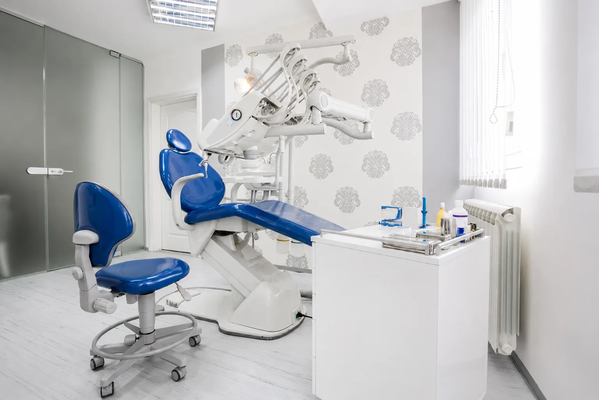
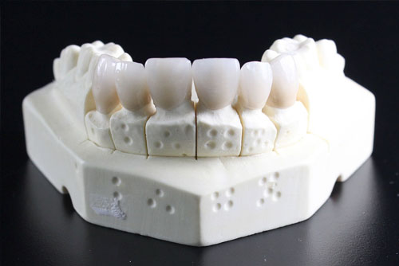
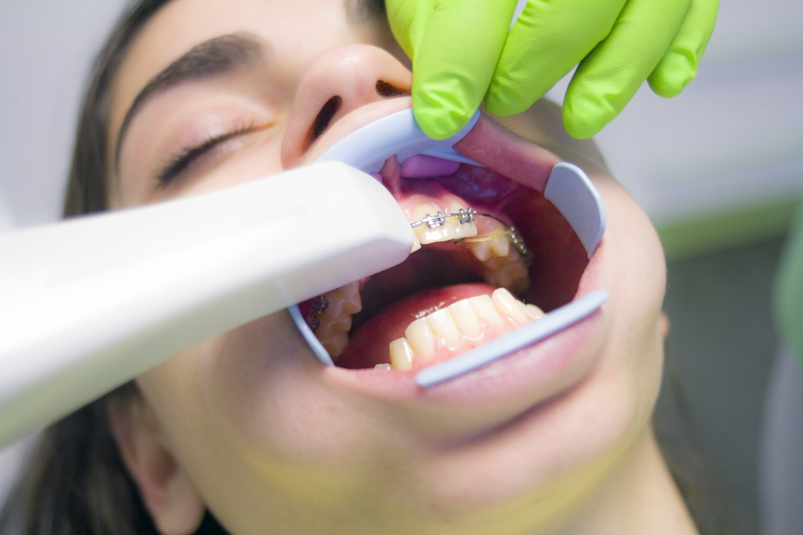

Clínica dental en Irun · Gipuzkoa
Tu sonrisa,
en buenas manos
Uno de los centros odontológicos de referencia en Irun. Tecnología de vanguardia, trato cercano y laboratorio de prótesis propio.
Clínica dental Binai
Odontología completa, con la cercanía de un centro de barrio
Clínica dental Binai ofrece en Irun servicios de odontología general, ofreciendo soluciones a los problemas de salud dental y estetica dental de nuestros pacientes. Trabajamos todas las especialidades odontológicas con los últimos avances tecnológicos y contamos con unas instalaciones modernas en las que la comodidad y la atención profesional están aseguradas. Nos encontramos junto al ambulatorio de Elitxu.

Tratamientos dentales
Una amplia gama de especialidades, bajo un mismo techo
En Clínica Dental Binai te atienden profesionales odontólogos cualificados y con experiencia demostrada. Nos adaptamos a las necesidades de cada paciente.

Implantología
Reemplazamos dientes enfermos o perdidos con implantes de alta calidad: una sonrisa natural y funcional.
Ortodoncia · Brackets e Invisalign
Corrección de la oclusión con brackets metálicos, cerámicos o alineadores transparentes Invisalign.
Estética dental
Blanqueamiento, carillas y diseño de sonrisa. Estética y salud de tu boca van de la mano.

Laboratorio de prótesis
Prótesis personalizadas con tecnología CAD-CAM para máxima precisión y adaptación.
Niños 7-15P.A.D.I. Osakidetza
Atención dental infantil del Gobierno Vasco para garantizar la salud bucodental de los más pequeños.
Odontología general
Revisiones, limpiezas, empastes y todo el cuidado preventivo. Tu salud bucal está en buenas manos, paso a paso, a tu ritmo.

Nuestro equipo
Profesionales dedicados a tu salud bucal
En Clínica Dental Binai, contamos con un equipo de profesionales, odontólogos y auxiliares altamente cualificados y en constante formación que se encargan de brindarte una atención personalizada y de calidad. Nos apasiona la odontología y estamos comprometidos con tu bienestar bucal.
Conoce dónde estamosDónde estamos
Tu dentista de confianza en el Bidasoa
Estamos en pleno Irun, en José Eguino 2, junto al Ambulatorio de Elitxu. Una ubicación céntrica y fácil para vecinos de Irun, Hondarribia y toda la comarca del Bidasoa.
¿Por qué elegirnos?
Cinco razones para confiar tu boca a Binai
En Clínica Dental Binai de Irun, nos diferenciamos por el trato y por la tecnología. Esto es lo que nos hace distintos.
Ver especialidadesEquipo cualificado
Profesionales altamente cualificados y en constante formación.
Tecnología de vanguardia
Para diagnósticos precisos y tratamientos efectivos.
Amplia gama de especialidades
Para atender cualquier problema bucal sin derivaciones.
Atención personalizada y cercana
Nos adaptamos a las necesidades de cada paciente.
Laboratorio de prótesis propio
Prótesis personalizadas y de alta calidad, hechas aquí.
Tu primera visita
Empezar es sencillo y sin compromiso
Llamas o escribes
Cuéntanos qué necesitas por teléfono o WhatsApp. Te damos cita cuando mejor te venga.
Revisión y radiografía gratis
Te valoramos sin coste y te explicamos con calma qué ocurre y qué opciones tienes.
Un plan a tu ritmo
Presupuesto claro y un tratamiento adaptado a ti. Sin prisas y sin sorpresas.
Nuestras instalaciones
Un centro moderno, pensado para tu comodidad



Opiniones de pacientes
Lo que dicen quienes ya confían en nosotros
Trato excelente y muy profesional. Me explicaron todo el tratamiento con detalle.
Muy buena clínica en Irun. Profesionales cercanos y unas instalaciones impecables.
Preguntas frecuentes
Resolvemos tus dudas
¿La primera consulta y la radiografía tienen coste?
No. La consulta de presupuestos y las radiografías son gratuitas, sin compromiso. Ven, te valoramos y te explicamos con calma tus opciones.
¿Qué es Invisalign y en qué se diferencia de los brackets?
Los brackets metálicos o cerámicos son técnicas fijas que ofrecen resultados óptimos en la corrección de la posición dental. Invisalign son alineadores transparentes y removibles que mueven los dientes hacia la posición adecuada de forma más discreta.
¿Tenéis laboratorio de prótesis propio?
Sí. Elaboramos prótesis dentales personalizadas con tecnología CAD-CAM para una máxima precisión y adaptación, con los mejores profesionales en diseño asistido por computadora.
¿Atendéis el programa PADI de Osakidetza?
Sí. Atendemos a pacientes con cobertura PADI-Osakidetza, el programa del Gobierno Vasco dirigido a niños de 7 a 15 años con derecho a la asistencia sanitaria pública en Euskadi.
¿Dónde estáis y cómo llego?
Estamos en José Eguino, 2 - 1ºA, 20302 Irun (Gipuzkoa), junto al Ambulatorio de Elitxu. Puedes ver el mapa y la ruta en la página Dónde estamos.
Pedir cita
Hablamos cuando quieras
Llámanos, escríbenos por WhatsApp o pásate por la clínica. Sin esperas largas y con un trato cercano desde el primer momento.
L-V 8:30-13:30 · 15:00-20:00 | S 9:00-14:00
¿Llevas tiempo sin hacerte una revisión bucal?
No lo retrases más y ven a visitarnos. Presupuesto y radiografía gratuitos, sin compromiso.